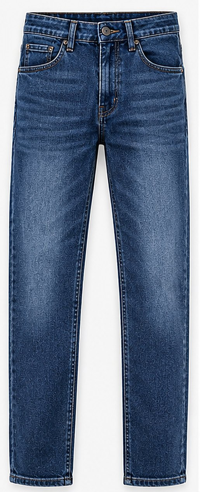
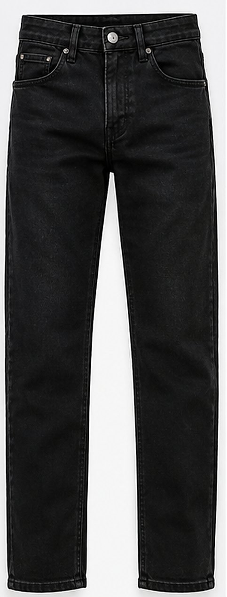
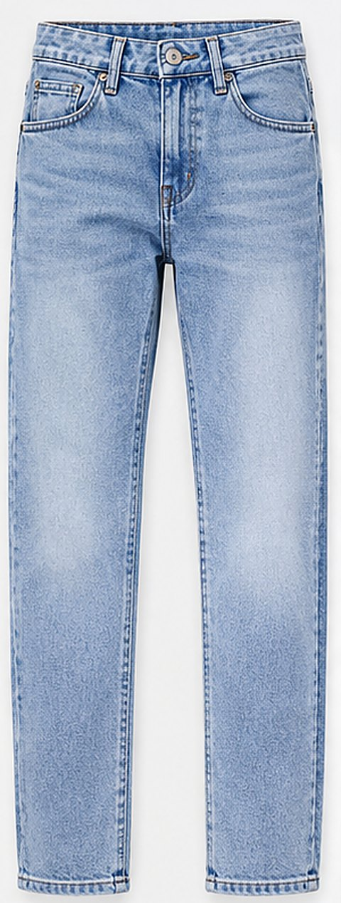
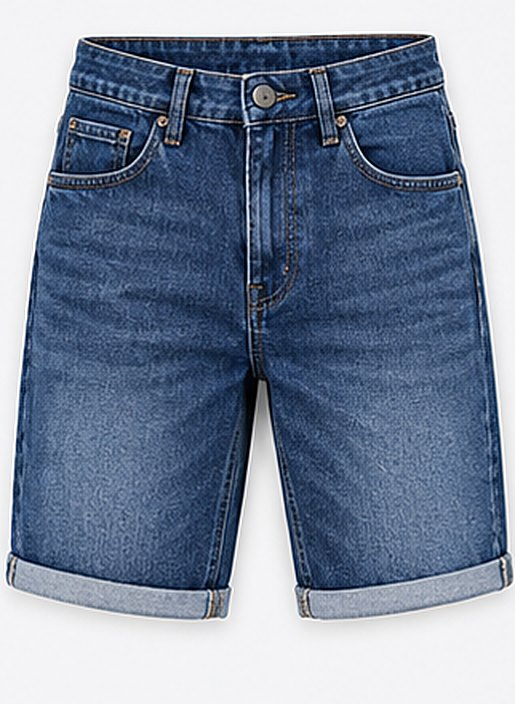
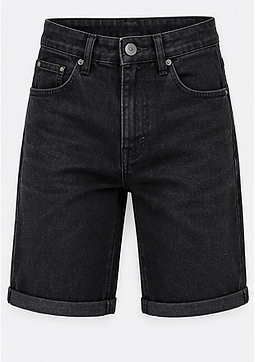
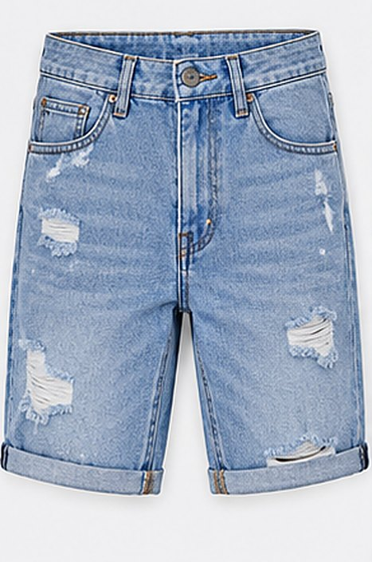
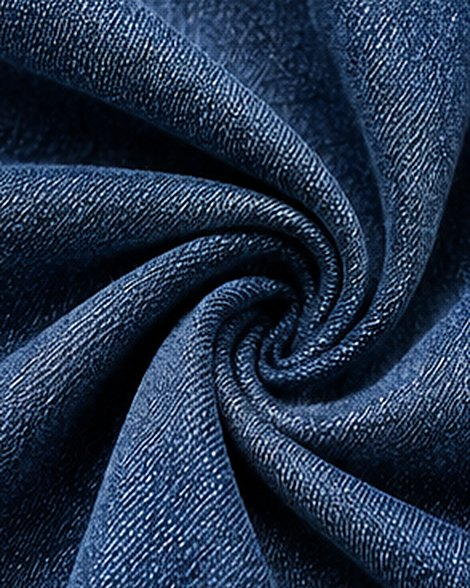
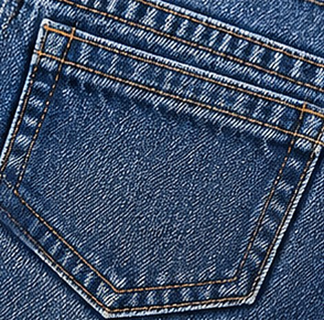
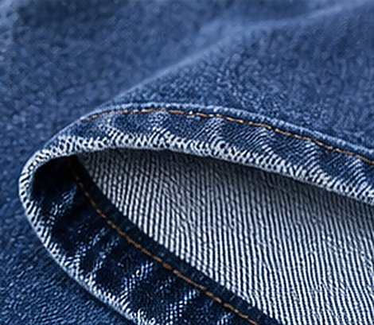

The collection
Jeans and denim shorts in the washes we produce most.
Jeans and denim shorts in the washes we produce most.
Fabric, wash and fit are developed to your specification.

Classic mid-blue wash with soft fading.

Deep black rinse, straight leg.

Soft light-blue wash.

Rolled hem in mid-blue denim.

Rolled hem in black denim.

Light wash with hand-finished rips.


